Chapter 1: The Magic of Prediction
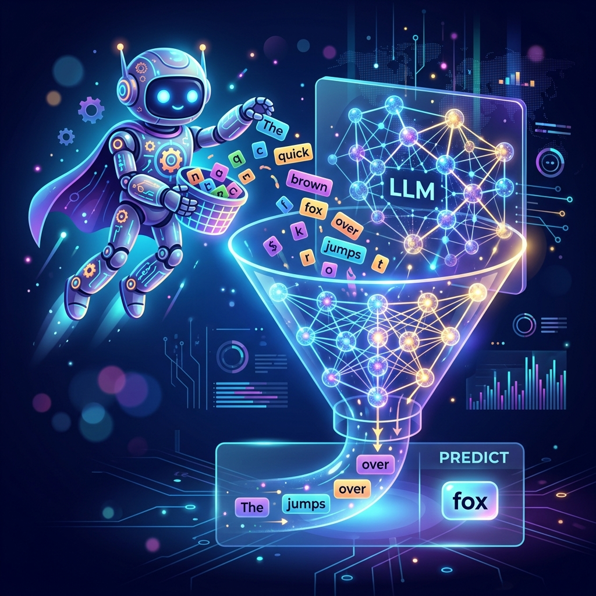
💡 The Simple Explanation
Imagine you have a magical friend who has read almost every book in the library. If you start a sentence like 'The quick brown fox jumps over the lazy...', your friend instantly knows the next word is 'dog'. They aren't thinking or reasoning; they are just guessing what word comes next based on all the books they've seen. An LLM (Large Language Model) is exactly like this magical friend. It's a next-word prediction engine.
🔍 Going Deeper
Under the hood, this 'guessing' is powered by a massive neural network. When you give it text, it breaks it down into small pieces called tokens. It then uses complex math to calculate the probability of what the next token should be. It predicts one token, adds it to your sentence, and then predicts the next one, looping over and over again until it forms a complete thought.
The "Aha!" Moment: An LLM doesn't actually 'know' facts; it just knows which words mathematically belong next to each other.
🌐 Real-World Connection
When you type on your smartphone and it suggests the next word above the keyboard, that is a tiny version of the exact same technology. LLMs just do it on a massive scale with trillions of parameters.
Chapter 2: Speaking in Numbers
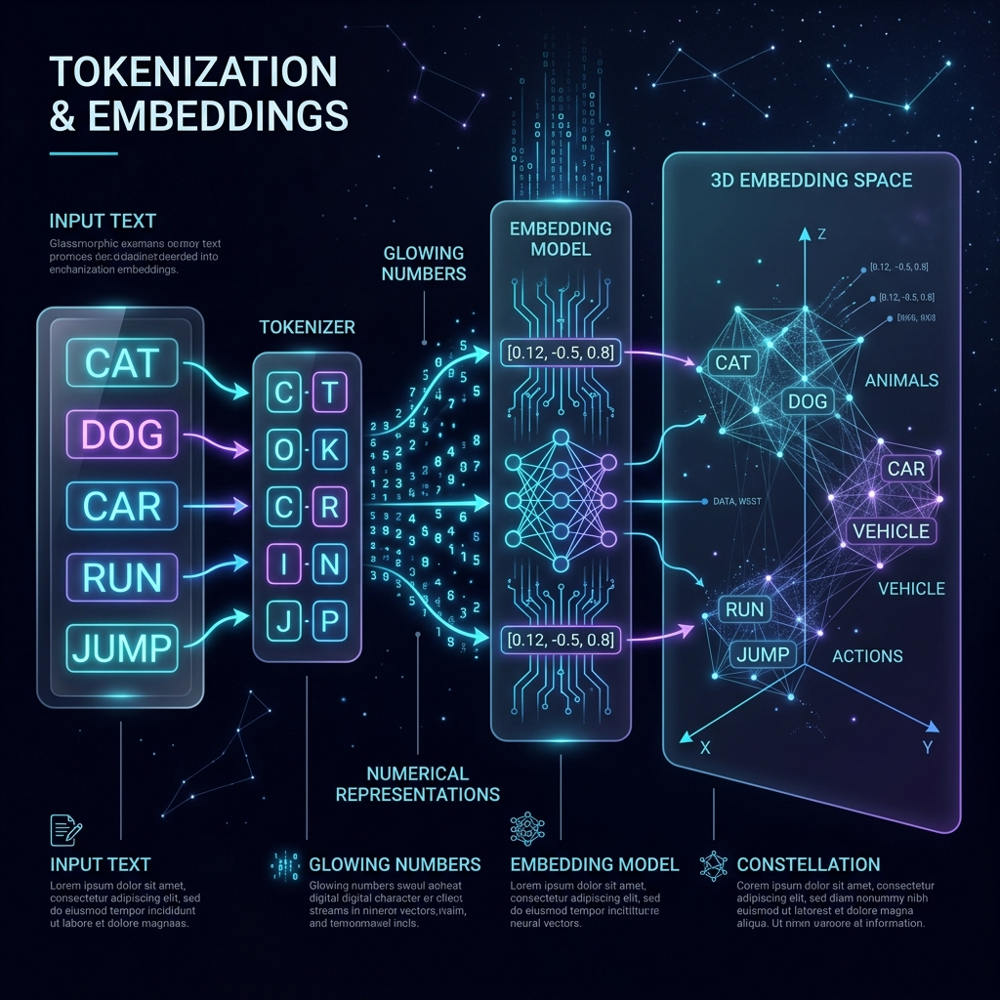
💡 The Simple Explanation
Computers don’t understand words like 'apple' or 'jump'. They only understand math and numbers. If you want to teach a computer language, you first need to turn a dictionary into a math problem. Imagine assigning every word in the dictionary a specific GPS coordinate on a giant 3D map. Words that mean similar things (like 'dog' and 'wolf') are placed close together. This map is what we call 'Embeddings'.
🔍 Going Deeper
Before mapping, the text is split into chunks using Tokenization (e.g., Byte Pair Encoding). Each token gets an ID, and that ID is mapped to a vector—a list of numbers representing its coordinates in a high-dimensional space (often 4,000+ dimensions). The model also adds 'positional encodings' to these vectors so it knows the order of words in a sentence.
The "Aha!" Moment: Embeddings turn language into geometry. The meaning of a word is just its distance and direction from other words in mathematical space.
🌐 Real-World Connection
When you search for 'comfortable sneakers' on an e-commerce site, and it shows you 'running shoes' (even though the words are completely different), it's because their embeddings are very close in the math space.
Chapter 3: The Attention Revolution
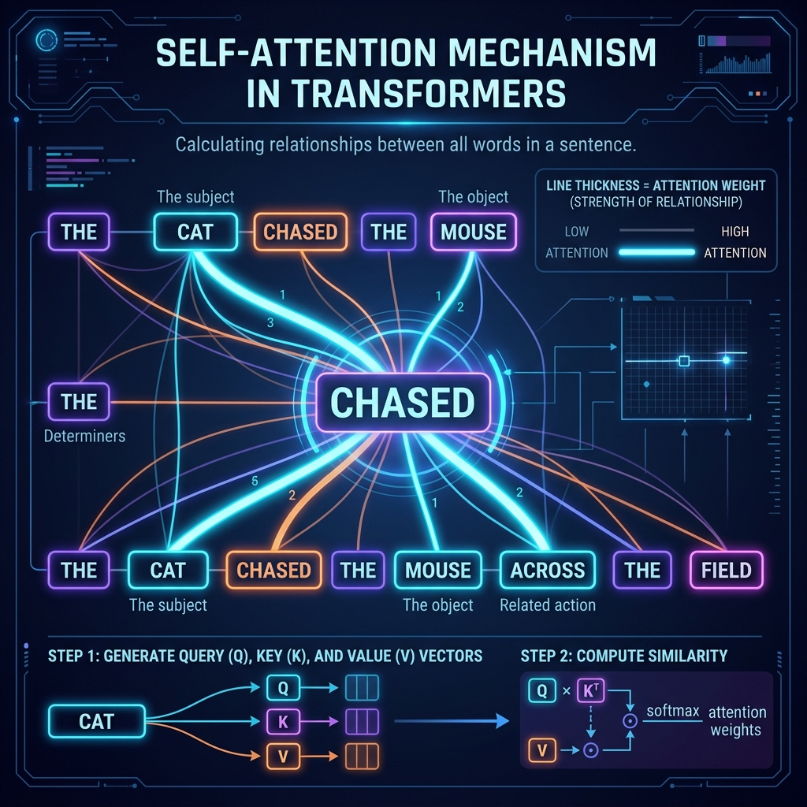
💡 The Simple Explanation
Imagine you are reading a mystery novel. When you read the word 'he' on page 50, you instantly know it refers to the detective from page 2. Your brain naturally pays 'attention' to the right context. For a long time, computers read text blindly, word-by-word. Then came 'Self-Attention'. It's a special calculation that allows every word in a sentence to look at every other word and ask, 'How strongly am I related to you?'
🔍 Going Deeper
At the heart of the Transformer architecture is Multi-Head Self-Attention. It allows the model to process all words simultaneously rather than sequentially. For each word, it creates a Query, Key, and Value vector. By multiplying Queries and Keys, the model forms an 'attention matrix' that dictates how much focus (weight) one word should place on another.
The "Aha!" Moment: Self-attention gives the model a dynamic memory, letting it figure out pronouns, context, and grammar rules purely by calculating relationships between words.
🌐 Real-World Connection
When translating 'The bank of the river' vs 'The bank on the corner', older translators struggled. Self-attention looks at surrounding words ('river' or 'corner') to perfectly understand which 'bank' is meant.
Chapter 4: Building a Brain
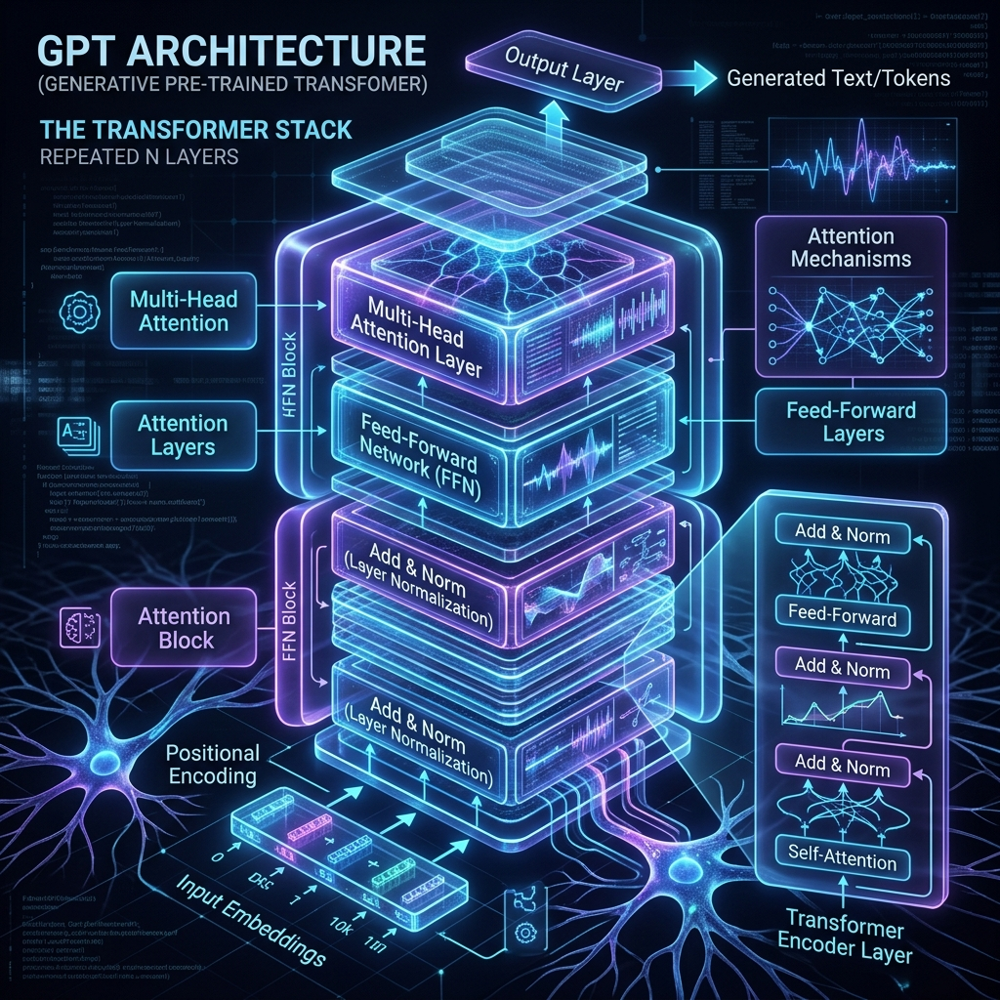
💡 The Simple Explanation
Think of building an LLM like assembling a multi-story factory. On the ground floor, raw text comes in and gets turned into numbers. Then it moves up through an elevator. On every single floor (called a Transformer Block), the data goes through two main machines: the 'Attention Machine' (which links related words) and the 'Thinking Machine' (which processes the data further). After passing through maybe 96 identical floors, the final output at the roof is a predicted new word.
🔍 Going Deeper
A Generative Pre-trained Transformer (GPT) is essentially a stack of decoder blocks. Inside each block, tokens pass through Self-Attention, are added to their previous state via a Residual Connection, normalized with Layer Normalization, and passed through a Feed-Forward Network (FFN) using non-linear activations like GELU. This repeated processing is what allows complex representations to form.
The "Aha!" Moment: The architecture is actually quite repetitive. The model's 'intelligence' comes from running data through the same structural block over and over again, allowing deep patterns to emerge.
🌐 Real-World Connection
The architecture of almost every major model today (ChatGPT, Claude, Llama) uses this exact same stacked layer approach designed by Google researchers in 2017.
Chapter 5: The Training Ground
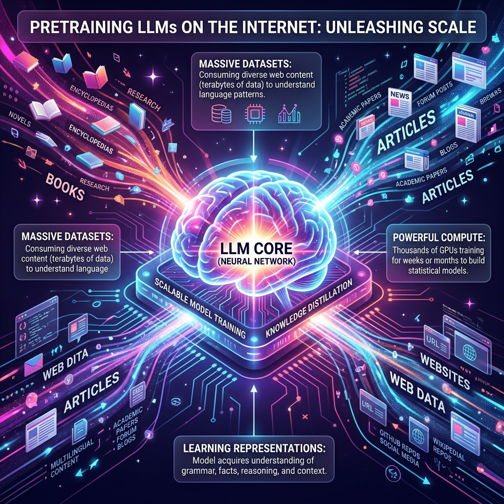
💡 The Simple Explanation
If you build a brain, it's completely empty at first. To teach it, you need to lock it in a room with the entire internet. You hand it a sentence with the last word covered up. 'The sky is ___'. The brain guesses 'green'. You say 'No, it's blue.' The brain slightly adjusts its internal dials so next time it's more likely to guess 'blue'. You repeat this trillions of times across Wikipedia, books, and Reddit until the brain learns grammar, facts, and reasoning.
🔍 Going Deeper
This phase is called Pretraining. It uses unsupervised learning on a massive corpus of text. The model tries to minimize its 'Loss' (the difference between its prediction and the actual next token) using an algorithm called Gradient Descent. The model updates billions of parameters (weights) across thousands of GPUs over weeks or months. By learning to predict the next word, it unintentionally learns world knowledge.
The "Aha!" Moment: LLMs aren't explicitly programmed with rules about grammar or history. They magically reverse-engineer these concepts just to get better at predicting the next word.
🌐 Real-World Connection
Training a frontier model like Llama 3 or GPT-4 takes essentially an entire supercomputer running at full capacity for months, costing tens of millions of dollars in electricity alone.
Chapter 6: Teaching Old Models New Tricks
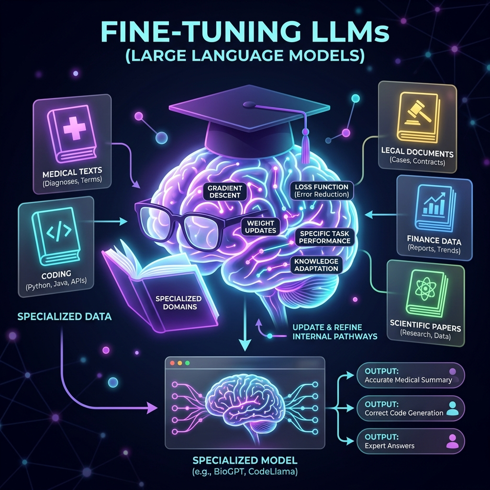
💡 The Simple Explanation
Imagine someone who has read the whole internet but has never been a doctor. You wouldn't trust them with your health. But what if you locked them in a room with only medical textbooks for a week? They'd become amazing at medical questions. Fine-tuning takes a general-purpose brain and gives it specialized training, making it an expert at a specific job like coding or writing legal contracts.
🔍 Going Deeper
Supervised Fine-Tuning (SFT) takes a pretrained model and trains it further on high-quality input-output pairs. Because training all parameters is expensive, engineers often use LoRA (Low-Rank Adaptation), which freezes the original weights and only trains small 'adapter' layers, allowing fine-tuning on a single GPU.
The "Aha!" Moment: Pretraining gives the model raw intelligence; Fine-Tuning gives the model a profession.
🌐 Real-World Connection
When a hospital uses a medical AI that safely summarizes patient records without hallucinating, it's using a model specifically fine-tuned on medical documents.
Chapter 7: Learning From Humans
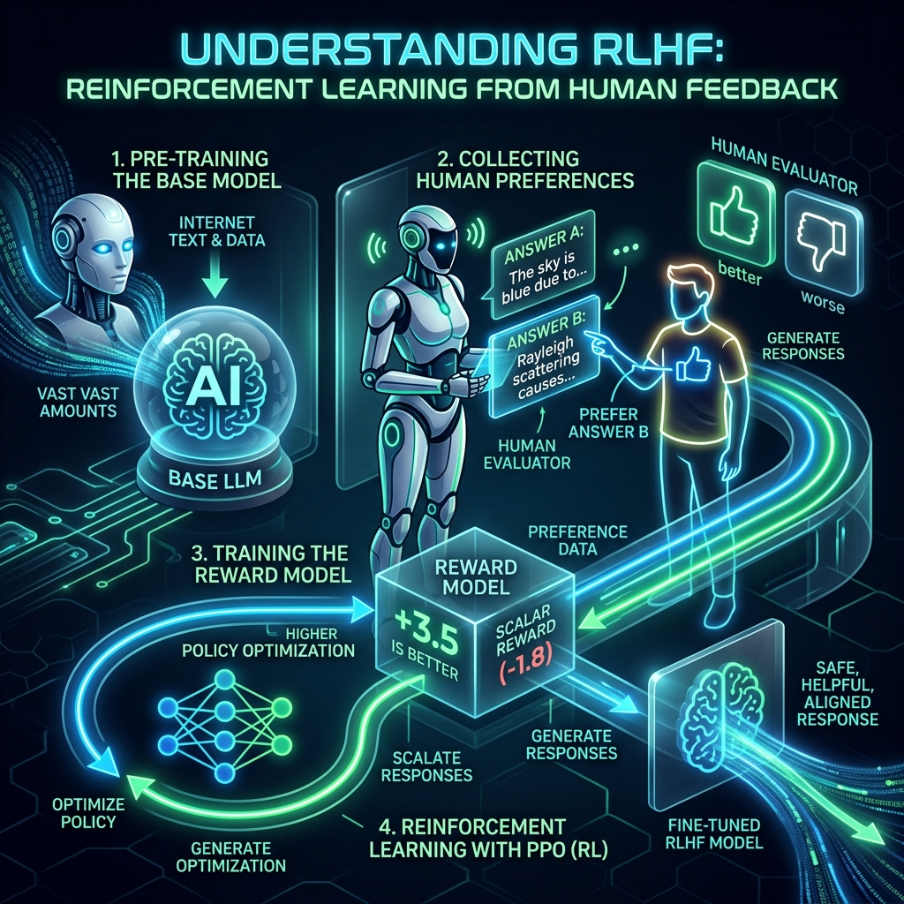
💡 The Simple Explanation
Let's say a chef learns a thousand recipes (Pretraining), but doesn't know what customers actually like. So, the chef cooks two versions of a dish and asks a customer, 'Which is better?' Over time, the chef learns exactly how to please the crowd. This feedback loop makes the chef polite, helpful, and safe. For AI, we call this RLHF (Reinforcement Learning from Human Feedback).
🔍 Going Deeper
RLHF uses a separate 'Reward Model' trained on human preferences. The main model generates multiple answers, the reward model scores them, and the main model updates its policy using algorithms like PPO (Proximal Policy Optimization) to maximize the reward. Newer methods like DPO (Direct Preference Optimization) simplify this by skipping the reward model entirely.
The "Aha!" Moment: An LLM naturally wants to complete the internet's text (including toxic parts). RLHF aligns the model to act like a helpful assistant instead of an unhinged autocomplete.
🌐 Real-World Connection
The biggest difference between GPT-3 (impressive but hard to use) and ChatGPT (a helpful assistant everyone loves) was the introduction of massive-scale RLHF.
Chapter 8: The Art of Asking
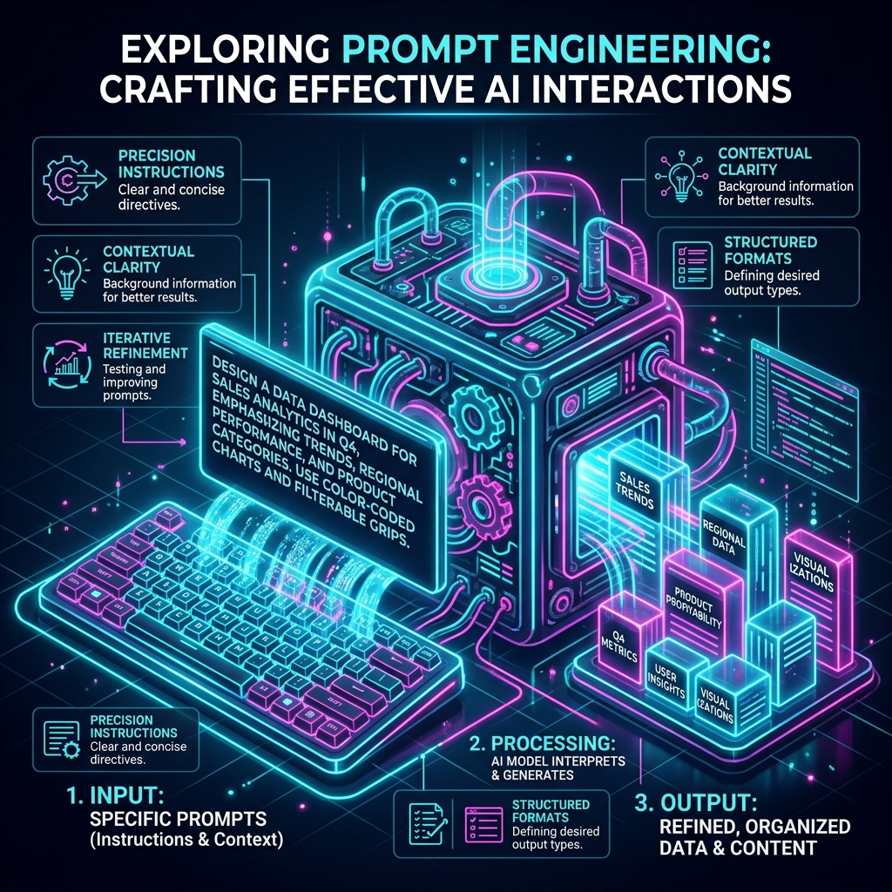
💡 The Simple Explanation
Talking to an LLM is like giving instructions to an incredibly smart alien who takes everything literally. If you say, 'Tell me about dogs', they might write a 10-page essay or a 3-word poem. Prompt Engineering is the art of giving the alien perfect instructions: 'You are a vet (Role). In 3 bullet points (Format), explain what dogs eat (Task), using simple words (Tone).'
🔍 Going Deeper
Effective prompting relies on providing context and constraints. Zero-shot prompting gives no examples. Few-shot prompting provides examples within the prompt to set the pattern. You can also adjust sampling controls: Temperature (how creative/random the output is), and Top-K / Top-P parameter tuning to control token selection probability.
The "Aha!" Moment: The model's output is only as good as your input. Programming with natural language requires just as much precision as programming in Python or C++.
🌐 Real-World Connection
When companies build AI customer service bots, they write massive 'System Prompts' hidden from the user that dictate exactly how the bot should behave and what it shouldn't say.
Chapter 9: Thinking Step by Step
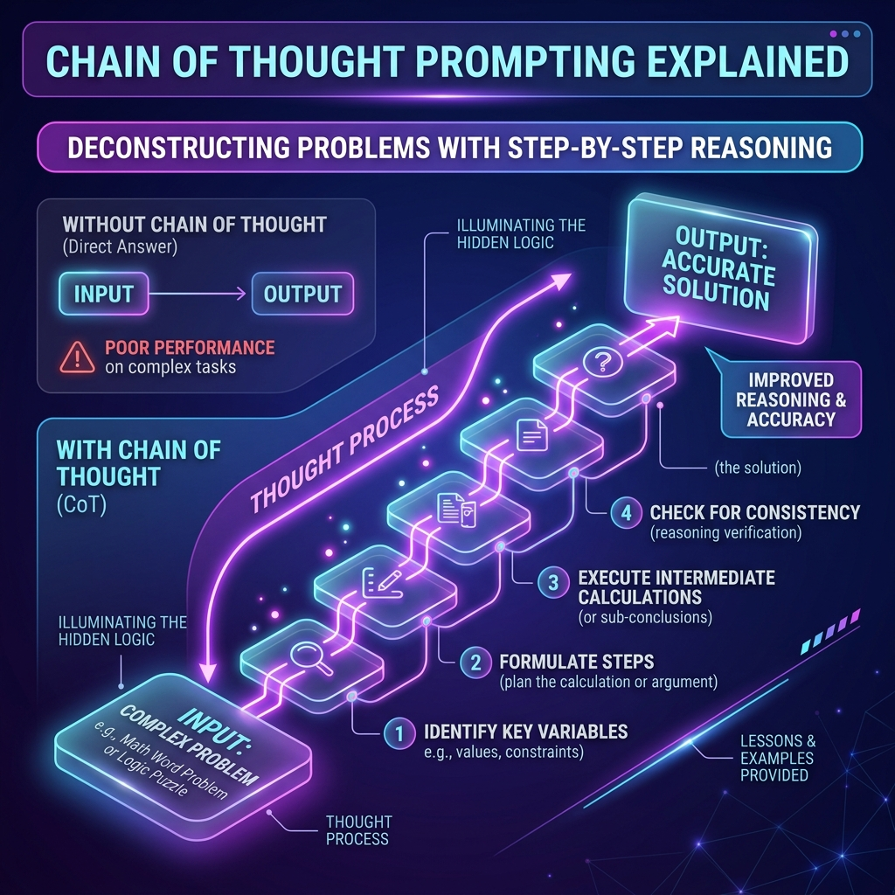
💡 The Simple Explanation
If I ask you 'What is 342 times 18?', you can't just blurt out the answer instantly. You need scratchpad paper to do the math step-by-step. LLMs normally try to blurt out answers instantly too, which leads to mistakes in logic. By explicitly telling the LLM to 'think step by step', you force it to use its generated output as a scratchpad, magically improving its reasoning abilities.
🔍 Going Deeper
This is called Chain of Thought (CoT) prompting. Advanced versions include Tree of Thoughts (ToT), where the model explores multiple paths simultaneously and discards bad ones, or Self-Consistency, where the model generates 10 different reasoning paths and takes the majority vote.
The "Aha!" Moment: Because an LLM's 'thinking' happens while it writes tokens, forcing it to write more tokens between the question and the answer literally gives it more compute time to think.
🌐 Real-World Connection
Newer reasoning models (like OpenAI's o1 series) have this step-by-step thinking built directly into their architecture, hiding the 'scratchpad' from the user.
Chapter 10: Giving LLMs a Library Card
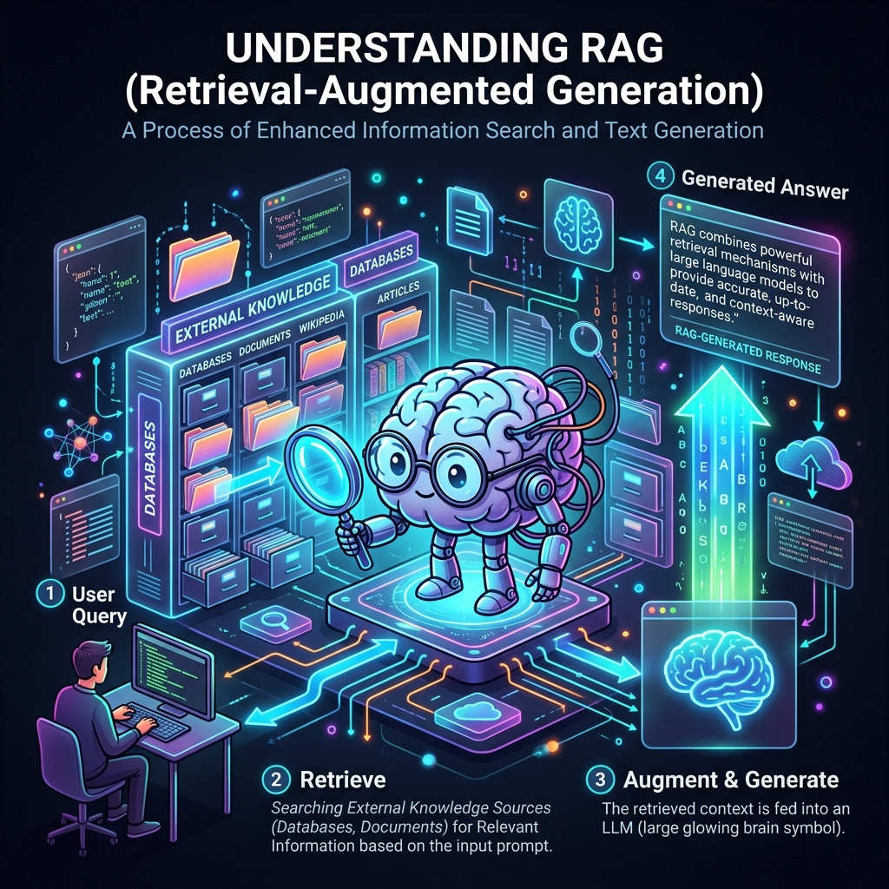
💡 The Simple Explanation
Imagine a very smart but forgetful student taking an open-book test. They can't remember the exact dates or facts, but if you hand them the exact textbook chapter, they can write a perfect essay. RAG (Retrieval-Augmented Generation) is precisely this. Instead of expecting the LLM to memorize your company's data, you search your documents, hand the relevant paragraphs to the LLM, and say 'Answer the user using only this text.'
🔍 Going Deeper
A RAG pipeline involves taking your documents, cutting them into small 'chunks', creating embeddings for them, and storing them in a Vector Database. When a user asks a question, the system converts the question to an embedding, finds the most mathematically similar chunks in the DB, and injects them into the prompt window before sending to the LLM.
The "Aha!" Moment: RAG completely solves the 'brain drain' problem. To update the model's knowledge, you don't need to retrain it; you just upload a new file to the database.
🌐 Real-World Connection
Almost every enterprise 'Chat with our Docs' application or internal company wiki bot is built using RAG architecture to prevent hallucinations and keep data current.
Chapter 11: Your First LLM App
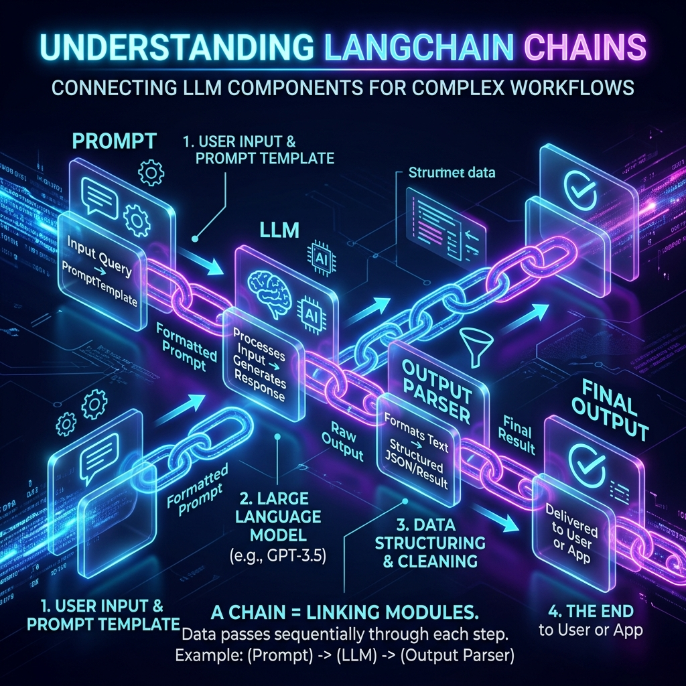
💡 The Simple Explanation
Using an LLM by itself is like having a powerful engine sitting on your driveway. To go anywhere, you need a steering wheel, pedals, and a chassis. LangChain is that chassis. It's a framework that lets you snap together different parts—like a Prompt Template (steering wheel), the LLM (engine), and an Output Parser (dashboard)—into a single 'Chain' that runs automatically.
🔍 Going Deeper
A basic LangChain app involves defining a PromptTemplate (with variables like `{topic}`), binding it to a model (like OpenAI or Llama), and chaining them using the `|` syntax (LCEL - LangChain Expression Language). You can build Sequential Chains where the output of Chain 1 (e.g., write a play) becomes the input for Chain 2 (e.g., write a review of that play).
The "Aha!" Moment: LangChain turns LLMs from passive chatbot interfaces into automated, programmable pipelines.
🌐 Real-World Connection
When a marketing company has an app that takes a URL, reads the article, and outputs 5 distinct Twitter posts, it's just a 3-step LangChain running in the background.
Chapter 12: Smart Assistants
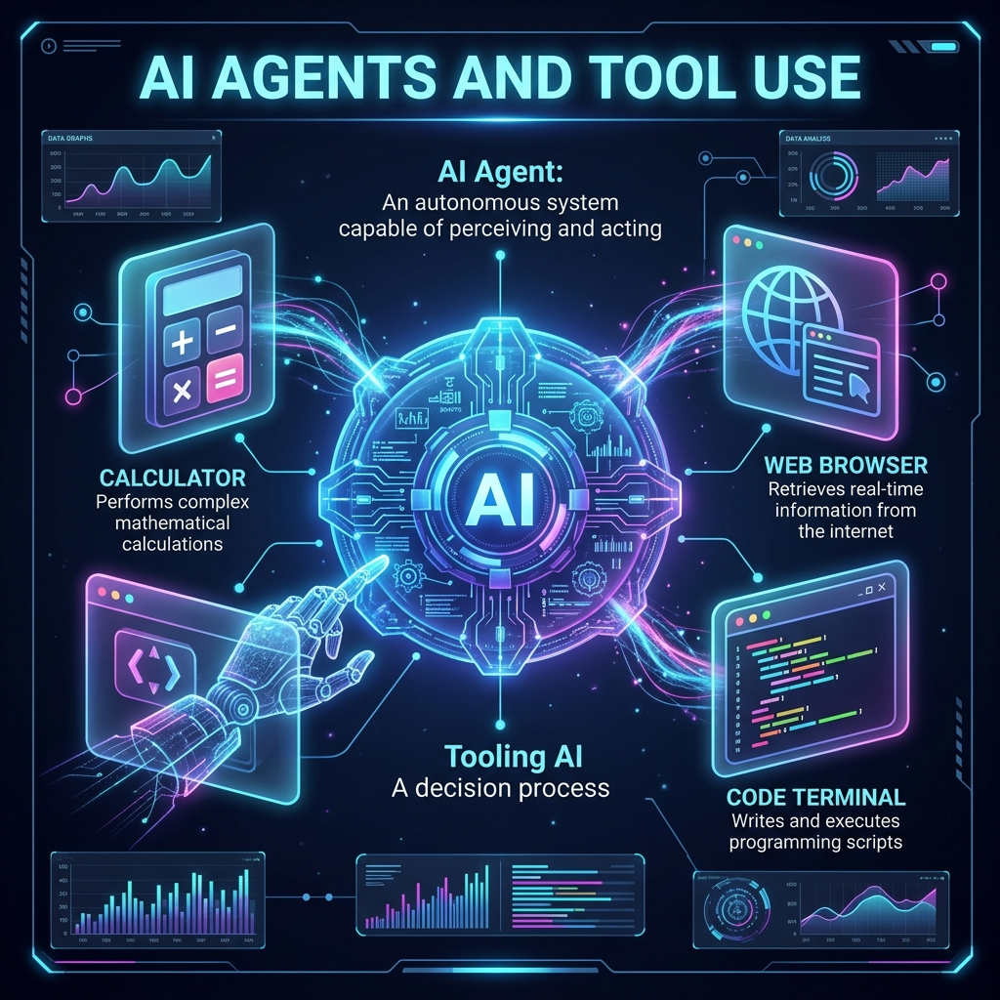
💡 The Simple Explanation
An LLM is just a brain in a jar. It can think, but it has no hands. If you ask it to 'book a flight', it can't click the website. A Tool is like giving the brain a robotic hand. An Agent is giving the brain the intelligence to look at its tools, decide which one to hold, and actually use it to affect the real world.
🔍 Going Deeper
In agentic frameworks like LangGraph, the LLM is given a description of available tools (e.g., `execute_sql()`, `search_web()`). Using paradigms like ReAct (Reason + Act), the model outputs a 'Thought', then an 'Action' (calling the tool with specific JSON arguments). The system runs the tool, returns the 'Observation' to the LLM, and the LLM decides if it needs to act again.
The "Aha!" Moment: Agents transform LLMs from readers and writers of text into doers of actions.
🌐 Real-World Connection
Devin, the famous AI Software Engineer, is an agent. It doesn't just write code; it runs a terminal tool, tries tests, sees the error, and iterates.
Chapter 13: Conversations That Remember
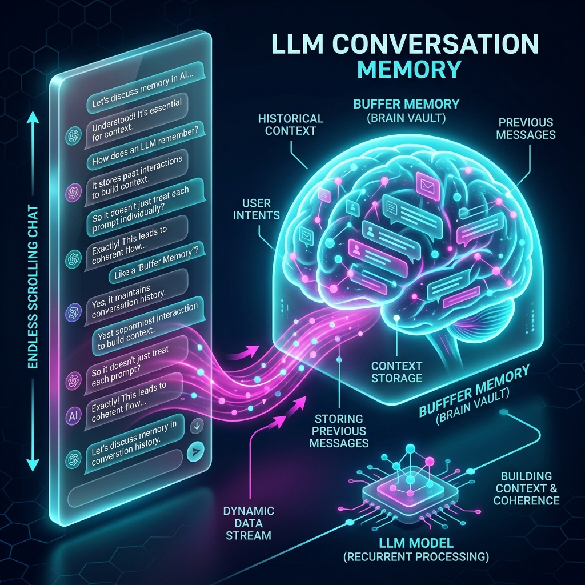
💡 The Simple Explanation
LLMs have the memory of a goldfish. Every time you send a message, it completely forgets the previous one. To have a conversation, you have to attach the entire history of the chat to every single new message you send. It's like having to remind your friend of your entire life story every time you say 'hello'.
🔍 Going Deeper
Memory in LLM apps is handled outside the model. Systems use a ConversationBufferMemory to simply append all past messages. When this gets too long and exceeds the 'context window' (the max tokens the model can read at once), we use ConversationSummaryMemory to compress old messages into a short summary, keeping the token count low while preserving context.
The "Aha!" Moment: Memory isn't stored inside the LLM computing core; it's just a growing text file of history injected into the prompt right before you hit 'send'.
🌐 Real-World Connection
ChatGPT's sidebar of past conversations is exactly this. When you click an old chat, OpenAI just loads that history file and drops it into the invisible prompt window.
Chapter 14: Chat With Your Documents
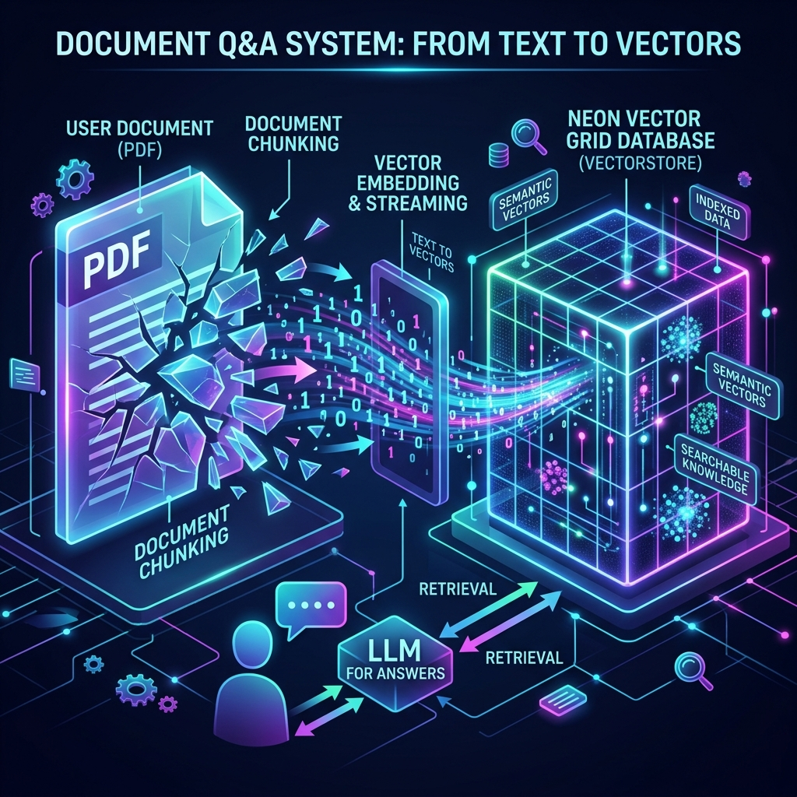
💡 The Simple Explanation
How do you make an AI read a 500-page PDF and answer questions about it? You can't paste 500 pages into the chat box; it's too big. Instead, you put the PDF through a shredder, keeping paragraph-sized chunks. You file these chunks in a special mathematical filing cabinet. When you ask a question, a librarian finds the 3 chunks that match your question best, and hands only those to the AI.
🔍 Going Deeper
This is the practical implementation of RAG. You use Document Loaders (for PDFs, CSVs, or YouTube transcripts), use TextSplitters to chunk the data with slight overlap, embed them, and load them into a VectorStore (like Pinecone or Chroma). The chain retrieves the top-K similar chunks and formats them into a prompt template: `Context: {retrieved_chunks}. Question: {question}`.
The "Aha!" Moment: The AI isn't reading the whole document when you ask a question. It's only reading the top 3 paragraphs that a keyword-search algorithm found first.
🌐 Real-World Connection
Applications like ChatPDF or specialized legal AI assistants rely entirely on intelligent chunking and vector retrieval to handle documents that exceed context windows.
Chapter 15: The LLM Twin
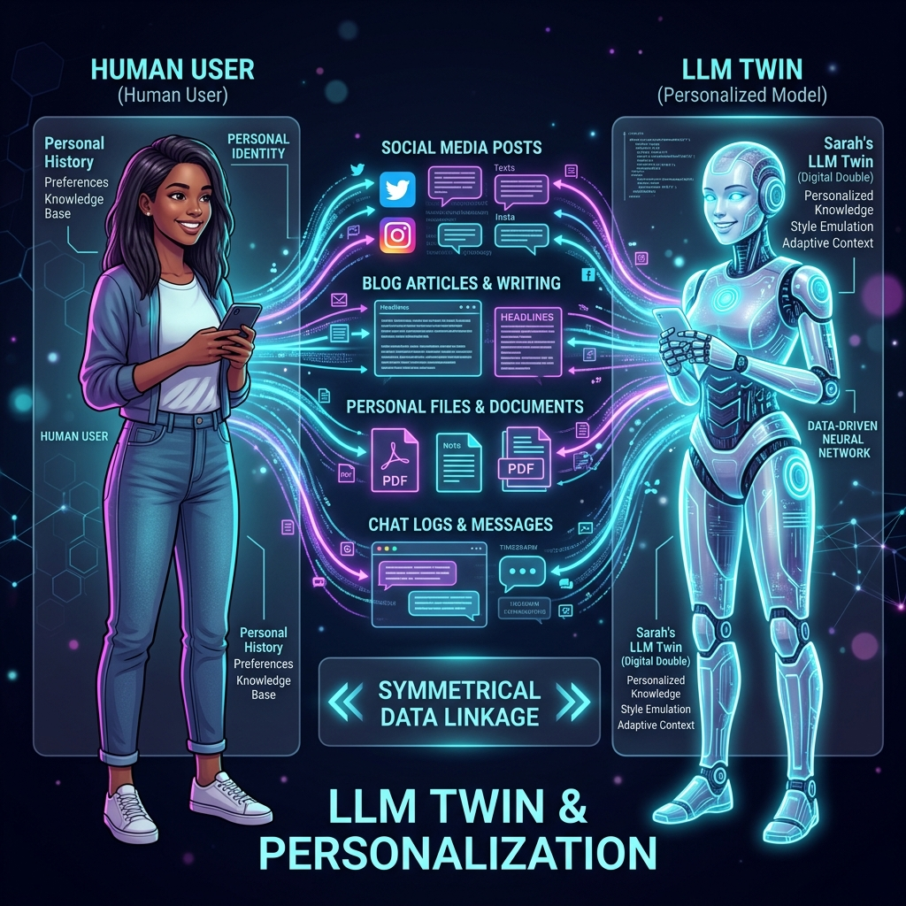
💡 The Simple Explanation
Imagine having a perfectly identical robot copy of yourself that writes emails exactly how you write them, uses your favorite phrases, and knows everything you've ever posted online. This is an 'LLM Twin'. Instead of an AI that sounds like a generic robot perfectly polite assistant, it sounds uniquely and identically like you.
🔍 Going Deeper
Creating a true LLM Twin requires an advanced pipeline combining all previous techniques. You scrape an individual's digital exhaust (Substack, Twitter, LinkedIn). You use Supervised Fine-Tuning to capture their specific grammatical quirks and tone. Finally, you layer a personal RAG database on top, ensuring the Twin accesses the individual's exact past statements and facts before generating new content.
The "Aha!" Moment: Identity in the AI age can be digitized. A person's 'voice' is just a statistical distribution of tokens that can be mimicked perfectly with enough data.
🌐 Real-World Connection
Influencers and authors are beginning to fine-tune personal twins to draft their newsletters, scaling their personal brand without losing their authentic voice.
Chapter 16: The LLM Factory
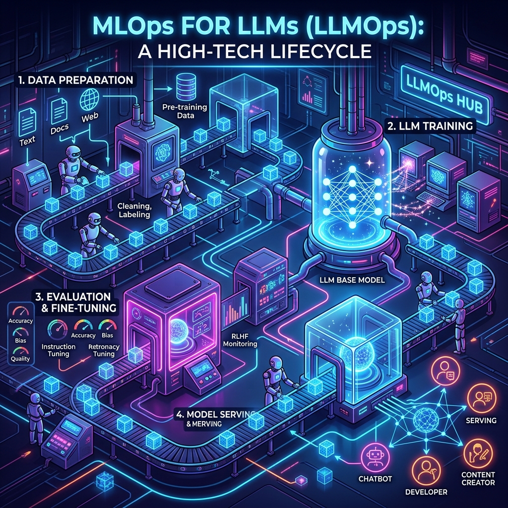
💡 The Simple Explanation
Building a cool AI space station in your garage is fun, but launching it into orbit so 10,000 people can use it at once is a completely different challenge. MLOps (or LLMOps) is the factory you build around your model. It involves automated conveyor belts (Data Pipelines), quality checks (Evaluation), and delivery trucks (Deployment) to ensure the AI doesn't crash when real users touch it.
🔍 Going Deeper
LLMOps encompasses tracking experiments (e.g., Weights & Biases), managing datasets, versioning prompts, and CI/CD for machine learning. Because LLMs are so massive, deploying them requires managing GPU orchestration (using Kubernetes or specialized platforms like Ray). The pipeline also monitors for 'data drift', where the model's accuracy degrades as real-world input changes over time.
The "Aha!" Moment: The model is only 10% of the work. 90% is the infrastructure required to feed data into it and serve it to users reliably and at scale.
🌐 Real-World Connection
When ChatGPT handles 100 million active users flawlessly, it's not because the model is magically stable; it's because OpenAI has world-class LLMOps distributing load across server farms.
Chapter 17: Making It Fast
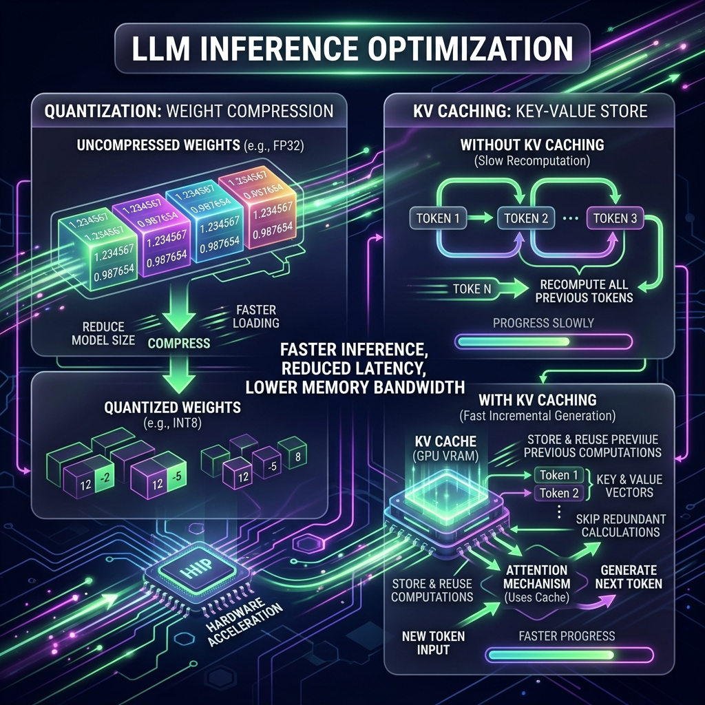
💡 The Simple Explanation
Imagine trying to squeeze a massive 18-wheeler truck (an LLM) onto a tiny one-lane farm road (a computer's memory). It won't fit. But if you carefully compress the cargo and use clever shortcuts, you can make the delivery. Inference optimization is the science of making these gigantic models run lightning-fast, sometimes even squeezing them onto a laptop or Raspberry Pi.
🔍 Going Deeper
Two primary techniques dominate: Quantization and KV Caching. Quantization reduces the precision of the model's weights (e.g., from 32-bit floats to 4-bit integers), drastically shrinking memory usage with minimal accuracy loss. KV (Key-Value) Caching prevents the model from re-calculating the entire attention matrix for previously written tokens during generation, massively speeding up the output.
The "Aha!" Moment: You don't always need a $40,000 GPU server. With aggressive quantization, state-of-the-art models can run completely offline on a smartphone.
🌐 Real-World Connection
Open-source models like Llama 3 are commonly quantized using formats like GGUF, enabling millions of developers to run them locally on MacBooks using tools like Ollama.
Chapter 18: Is It Any Good?
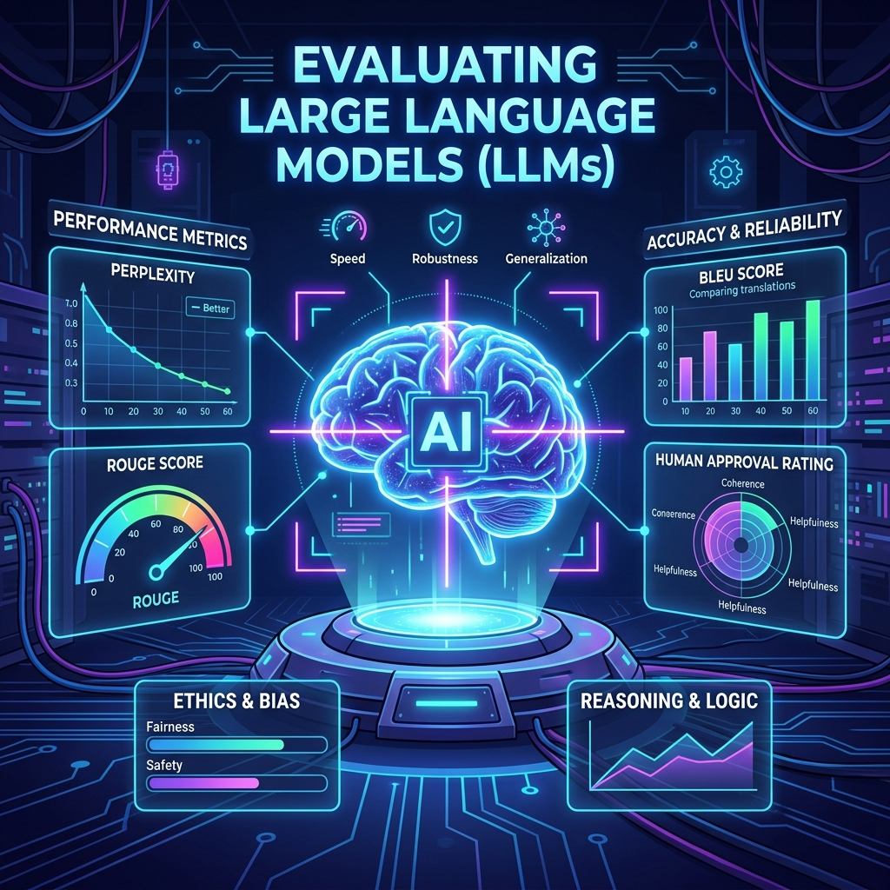
💡 The Simple Explanation
If you build a calculator, it's easy to test: 2+2 is always 4. But how do you grade an AI that writes poetry, summarizes meetings, or tells jokes? There is no single 'correct' answer. Evaluating LLMs requires a mix of clever automated tests and a panel of human judges giving thumbs up or thumbs down to figure out if the AI is actually helpful or just hallucinating.
🔍 Going Deeper
Evaluation uses metrics ranging from statistical to human-driven. Perplexity measures how 'surprised' a model is by standard text (lower is better). BLEU and ROUGE compare AI output to human reference texts. The modern gold standard, however, is 'LLM-as-a-Judge', where a stronger, more expensive model (like GPT-4) is prompted to grade the output of a cheaper model based on a rubric.
The "Aha!" Moment: Because deterministic math can't judge art or reasoning, the most effective way to grade an AI today is to use an even smarter AI as the teacher.
🌐 Real-World Connection
The Hugging Face 'Open LLM Leaderboard' evaluates thousands of models on standardized tests (like MMLU, which tests high school and college level knowledge) to rank the best open source models.
Chapter 19: The Guardrails
💡 The Simple Explanation
If you give an AI the entire internet to read, it will learn the best of humanity, but also the worst—toxicity, bias, and dangerous instructions. Putting 'Guardrails' on an AI is like putting bowling bumpers on the lane. No matter what the user types to try and trick the AI (a 'jailbreak'), the guardrails force the AI to bounce back and provide a safe, ethical, and polite refusal.
🔍 Going Deeper
Safety involves multiple layers. Alignment is done during RLHF training to make the model inherently safer. Input/Output Guardrails are secondary, specialized models (like Llama Guard) sitting between the user and the LLM. They classify the user's prompt or the LLM's response for toxicity, PII (Personally Identifiable Information), or prompt-injections, blocking the transaction if rules are violated.
The "Aha!" Moment: Security in AI is a cat-and-mouse game. As models get smarter, the prompts designed to break their rules (jailbreaks) also become incredibly complex algorithmic puzzles.
🌐 Real-World Connection
When you ask an AI for malicious code and it responds, 'I'm sorry, but I cannot fulfill this request,' a safety classifier successfully caught the violation and triggered a canned refusal.
Chapter 20: What's Next?
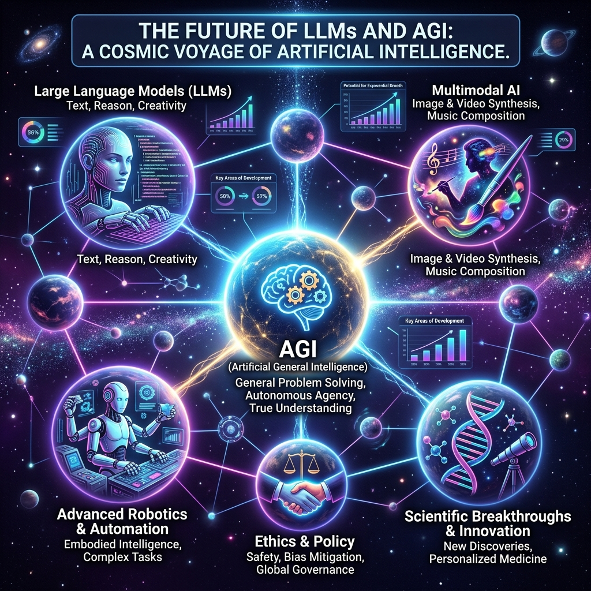
💡 The Simple Explanation
Right now, LLMs are incredible text-processing engines. But the world isn't just text. The future is an AI that can see a live video feed, hear your voice, control a robotic arm, and reason about a problem for three days before giving you a brilliant answer. The ultimate target is AGI (Artificial General Intelligence)—a system that can do any intellectual task a human can do.
🔍 Going Deeper
The frontier is largely focused on two areas: Multimodality (models natively understanding text, audio, images, and video simultaneously without separate models) and System 2 Thinking/Agents (giving models the architecture to stop, search, plan, and verify recursively). The debate continues on whether scaling current Transformer architectures will achieve AGI, or if a completely new paradigm is needed.
The "Aha!" Moment: We are teaching rocks to not just talk, but to see, hear, and build their own tools. We are orchestrating the fastest technological evolution in human history.
🌐 Real-World Connection
When an AI can autonomously review a codebase, open a pull request, test it, and deploy it to production while fixing its own bugs—all while you sleep—that is the agentic future currently being built.